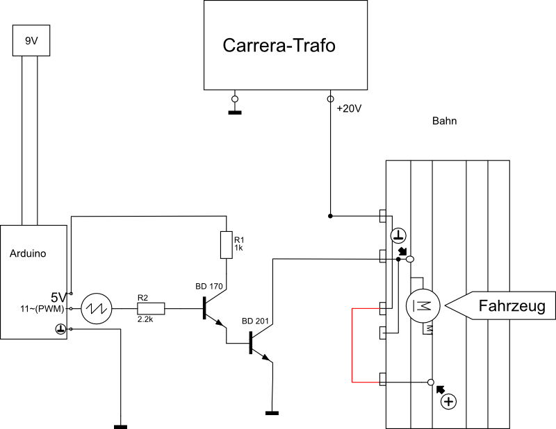

Das Arduino ist das „Gehirn“ unseres selbstgesteuerten Autos. Es ist mit einem 32Kb Flash-Speicher und einem 16MHz Prozessor ausgestattet. Das Programm ist vollständig auf dem Chip gespeichert. Es benötigt lediglich eine Stromversorgung und ist dann sofort einsatzbereit. Sämtliche Lichtschranken, die zum selbständigen Fahren benötigt werden, sind an das Arduino angeschlossen. Auf Port 11 liegt ein PWM (Pulsweitenmodulation) Signal an, welches je nach Position des Autos auf der Strecke einen unterschiedlichen Aussteuerungsgrad hat.
Der Grund für die Nutzung des PWM-Signal ist die Einfachheit, da das Arduino einen eingebauten Modulator besitzt. Wir versuchten anfangs durch Verstärkerschaltungen das schwache Signal des Arduino zu verstärken, um die Autos anzutreiben. Obwohl eine geeignete Schaltung entworfen wurde, war es leider nicht möglich diese umzusetzen. Der Grund dafür waren die Stromquellen, die nicht fdafür geeignet waren eine Operationsverstärker-Schaltung zu betreiben, da die Carrera Trafos einen starken Spannungsabfall bei einer Last hatten.
Hier zunächst ein Beispiel um zu verdeutlichen wie wir das PWM nutzen:
t1 / T = 0.25 = 25%
Durch den unterschiedlichen Aussteuerungsgrad des PWM-Signals fährt auch das Auto schneller. Je größer t1 ist desto stärker beschleunigt es. So ist es auch möglich zu bremsen. In den normalen Carrera Fahrtenregeler ist ein Bremse eingebaut, die, wenn man den Schieber gehen lässt, den Motor kurzschließt. Somit kann Strom fließen, was die Energie des Motors abbaut. Da dies durch die Arduino-Steuerung nicht möglich ist, geben wir einfach ein PWM-Signal mit einem sehr kleinen t1 an und können somit die Geschwindigkeit schwach vermindern. Um stärker abbremsen zu können müssten wir den Motor kurzschließen, wozu wir allerdings noch keine passende Möglichkeit gefunden haben.
Unten abgebildet ist die Schaltung, welche das PWM-Signal verstärkt. Wir verändern die Spannung die vom Trafo kommt. Somit brauchen wir keinen Schieberegler mit dem das Auto normalerweise gesteuert wird, sodass diese überbrückt werden müssen (rote Linie).
Da die erste Verstärkerschaltung nur recht simpel aufgebaut war, erhitze der ATmega328 des Arduino sehr stark. Dies lag daran, dass der Transistor mit sehr hohen Strömen angesteuert wurde. Durch die neue Schaltung wird wesentlich weniger Leistung benötigt, um das Fahrzeug mit Strom zu versorgen, da wir einen Steuertransistor haben, welcher den eigentlichen Leistungstransistor ansteuert.
Somit bleib der ATmega auch bei langer Laufzeit kühl. Wir haben die Schaltung bereits aufgebaut und getestet, anhand des Oszilloskops sahen wir, dass die Spannung des Arduino nicht mehr absank oder flakerte, wenn wir eine Last, also das Auto, anlegten. Jedoch haben wir bis jetzt nur einen kurzen Test gemacht und müssen erst überprüfen, wie sich der ATmega nach langer Fahrzeit verhält.
Das größte Problem bereitet uns noch immer das Bremsen gefolgt von Schwierigikeiten bei den Lichtschranken, welche sich durch eine optimierte Verkabelung und der Reparatur der Lichtschranken durch Herr Althen lösten.